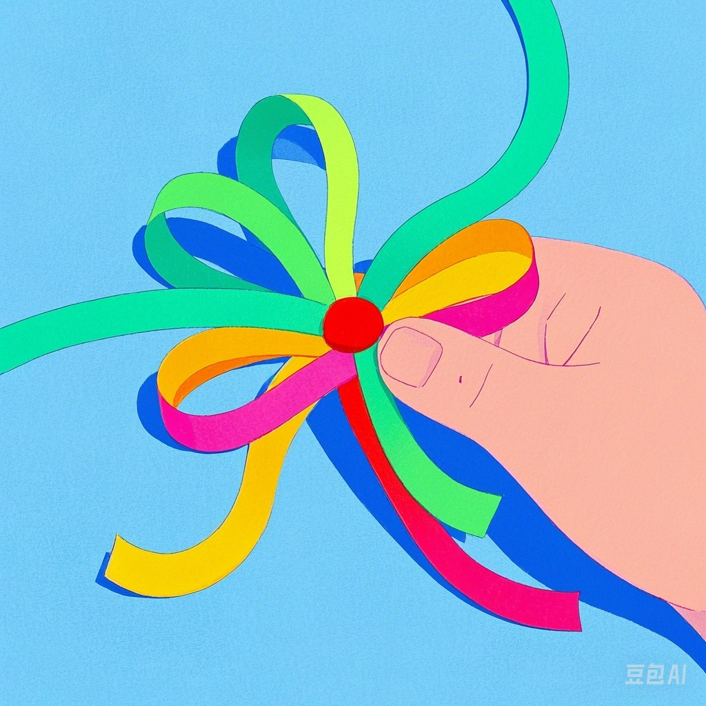
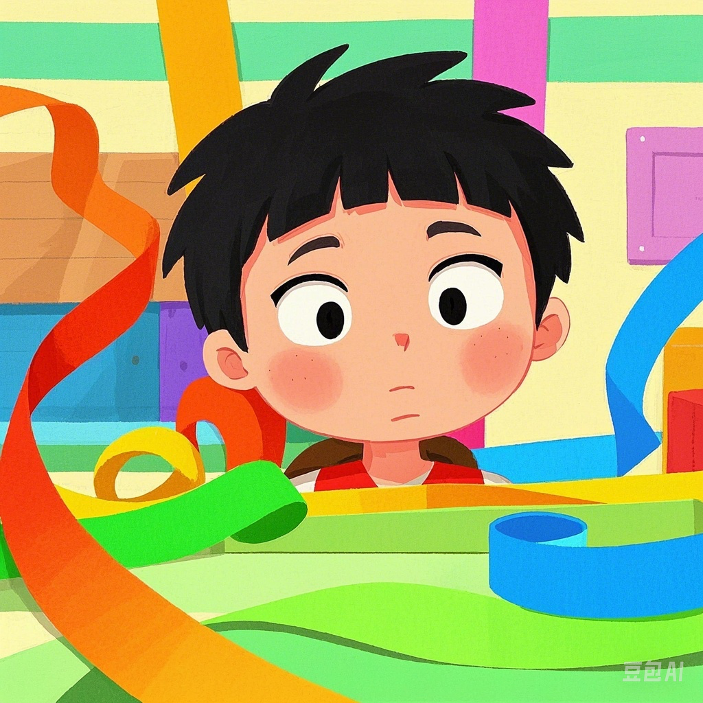
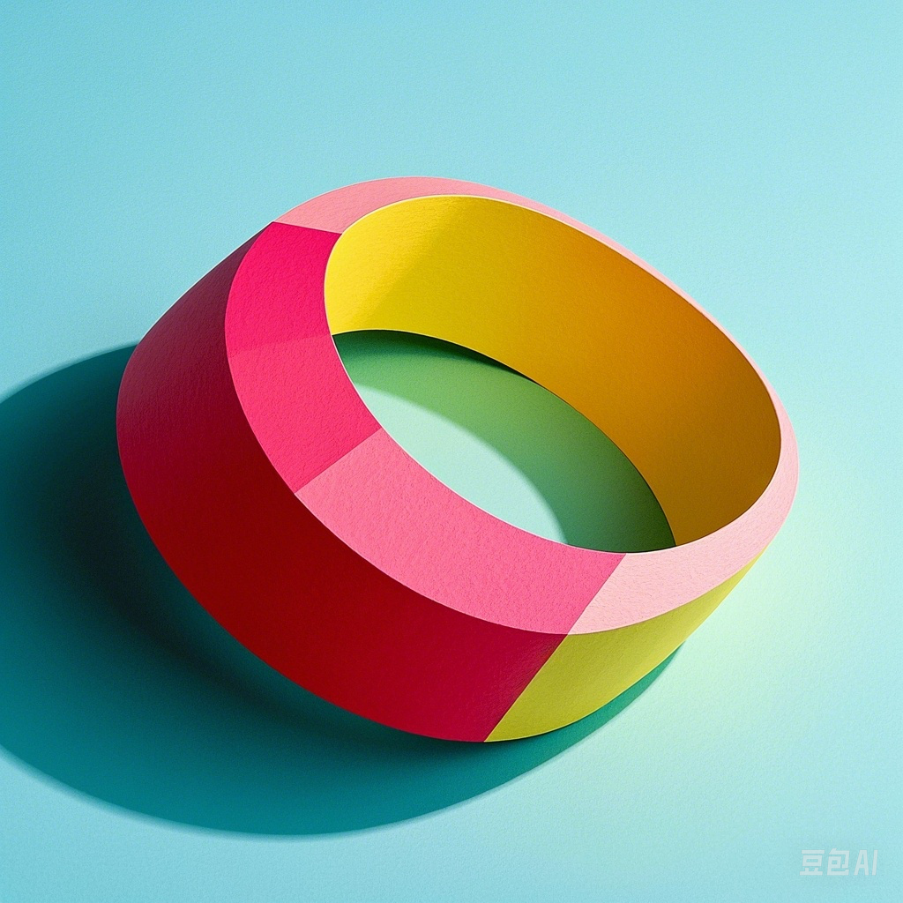
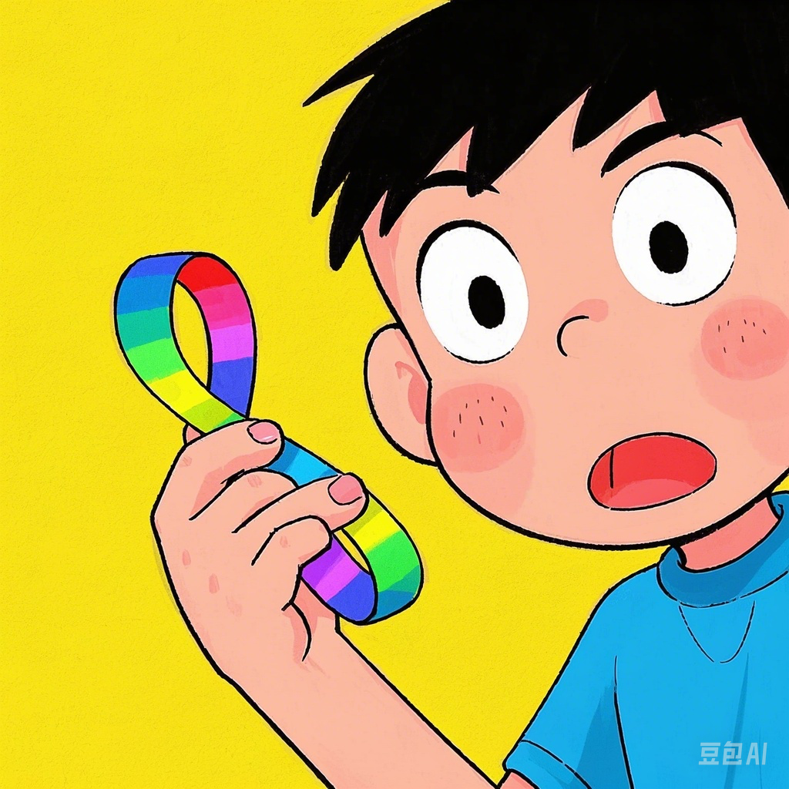

在一个阳光明媚的早晨，小明收到了一个特别的礼物——一条彩色的纸带。
"这是什么？"小明好奇地问。
"这是一条普通的纸带，"爸爸回答道，"但如果我们把它转一下，再连接起来，就会变成一个神奇的东西，叫做莫比乌斯环。"
爸爸拿起纸带，扭转了一次（转180度），然后把两端粘在一起，形成了一个奇特的环。
"看起来就像普通的环，有什么特别的吗？"小明问道。
"你试着用手指沿着它的表面走一走，"爸爸建议道。
小明用手指沿着环的表面滑动，神奇的事情发生了！他的手指竟然走遍了整个环的所有表面，而且从没有跨过边缘！
"哇！这太神奇了！"小明惊讶地叫道。
"是的，"爸爸笑着说，"莫比乌斯环只有一个面和一个边。如果你在上面画一条线，你会发现画完整个环后，线会回到起点，但是会在纸带的两面都有线！"
小明迫不及待地拿起彩色笔，在莫比乌斯环上画了起来。果然，当他画完一圈后，整个环都被他的线条覆盖了！
"这就是数学的神奇之处，"爸爸说，"看似简单的事物，有时却蕴含着令人惊讶的性质。"
你知道吗？
莫比乌斯环是由德国数学家和天文学家奥古斯特·费迪南德·莫比乌斯在1858年发现的。它是一种只有一个面和一个边的神奇曲面！